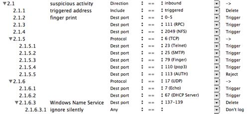
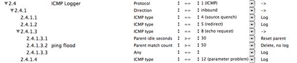

Figure 4: rule 2.2 server attacks expanded
The default firewall configuration is setup to detect intruders and block them completely by IP address without restricting most other services. This level of protection requires no special knowledge or configuration and is well suited to typical Internet client use (web surfing, E-mail, downloading files, etc.).
If you want to protect one or more servers behind your firewall, some additional configuration may be desirable. The default configuration already includes rules to handle many common services, but you need to enable this protection based on the services you wish to use.
These pages review the default configuration in some detail and suggests ways it can be customized to fit your needs.
To begin using IPNetSentryX, launch the application completing the installation process if necessary. An untitled firewall document appears containing the default firewall configuration. Use the disclosure triangles along the left side of the outline to examine any rules in more detail. Option-Expand will expand all the rules beneath a single item.
When you are ready, press "Apply" and select the "IPNetSentry On" or "IPNetRouter On" check box. Congratulations, you now have basic firewall protection. You can use the Popup menu in the upper right corner to select traffic statistics and watch as network traffic matching a firewall rule is detected. Normally IPNetSentryX records any firewall events in the log drawer (or "Sentry Log" under the Tool menu). Use the Preferences window to select other options including save to disk or send as E-mail.
Figure 1: default configuration overview
This first screen image provides a high level overview of the default configuration. At the top level, the rules are split into two main groups: those that should always be applied first before other processing (1.x), and the rest (2.x), some of which should appear after others. The second group is divided into six functional areas you can choose to enable or disable with the corresponding check box on the left.
The six functional groups are:
Suspicious activity - detects port scans and common attack probes and blocks the potential intruder from further access.
Server attacks - detects internet worms and other web based attacks.
Promiscuous resets - protects against hostile firewalls or mis-configured hosts that might disrupt legitimate network traffic.
ICMP Logger - provides ICMP (Internet Control Message Protocol) logging.
Check servers - an example showing how to monitor a server and notify an administrator when it becomes unavailable.
Protect servers - rules designed to disable all inbound TCP connections except those for explicitly enabled services.
Figure 2: expanded first rule
In figure 2, we've expanded the first rule to reveal its detailed behavior.
Rule 1.1 deletes packets with fragment offset between 1 and 63. The only reason to generate such a packet that fragments the IP or TCP header is to sneak around a firewall.
Rule 1.2 allows subsequent fragments to pass. By default, only the first fragment is tested against our other filters.
Rule 1.3 checks for packets that claim to be from the loopback address. We allow legitimate loopback packets in 1.3.1 since local programs often use the loopback interface to communicate with each other. Rules 1.3.2 and 1.3.3 delete spoof loopback packets that claim to be for the loopback address but do not use the loopback interface (lo0).
Rule 1.4 deletes packets with the IP source route option. Source routing has little if any legitimate use, but may be used to sneak around other security checks.

Figure 3: rule 2.1 suspicious activity expanded
Rule 2.1 and its children check for suspicious activity and ban any further access from the corresponding host. Rules 2.1.2 through 2.1.6 detect inappropriate access attempts and saves the corresponding host address in the triggered address table. Rule 2.1.1 deletes packets from any host in the triggered address table. If you want to allow one of these services to pass through your firewall, you should disable the corresponding rule.
Two interesting exceptions to the description above are TCP port 113 (AUTH) and UDP ports 137-139 (Windows Name Service). Rule 2.1.5.5 explicitly refuses connection requests to port 113 by sending a TCP RESET segment. Some SMTP servers try to verify the sender is authorized to use the server by connecting to port 113. If we triggered on this port, it might prevent us from sending outgoing mail. If we deleted packets on this port, it might cause a delay each time we tried to send mail as the server waited for the connection request to time out. By refusing the connection immediately, we confirm that a host is present but reject the connection. SMTP servers that use this test should proceed to accept our mail immediately.
In Rule 2.1.6.3, we silently delete packets on UPD ports 137-139. Notice rule 2.1.6.3.1 causes these packets to not be logged. These ports are used by some Windows computers to identify other local hosts and have been widely exploited to compromise Windows computers. We delete them since they have no legitimate purpose outside our LAN or for Macs, but still allow other communication from such hosts in case there is a Windows machine on our LAN.
Figure 4: rule 2.2 server attacks expanded
Rule 2.2 uses the payload inspection feature to block common Internet worms.
Figure 5: rule 2.3 promiscuous resets expanded
Some firewalls can send TCP RESET segments when denying access. If the interface running such a firewall is set to promiscuous mode, the firewall may send TCP RESET segments in response to connection requests that were not originally addressed to that host. The symptom is frequent “Connection refused” responses when trying to access remote servers. By delaying such TCP RESET segments (approximately 0.5 seconds), we allow the actual target of the connection request (if any) to respond first completing the connection process. When the RESET arrives, it will be safely ignored as out of order if the target host has already responded.

Figure 6: rule 2.4 ICMP Logger expanded
Rule 2.4 provides ICMP (Internet Control Message Protocol) Logging. ICMP is used to probe and configure network routes and report network errors, so should not normally be disabled. Logging ICMP traffic allows you to see when your host is being probed or a network anomaly is reported. The rules are designed to log those ICMP message types we are not likely to generate ourselves. For example, we log inbound ping requests, but not responses to our own pings or trace routes. Rule 2.4.1.3.2 is a simple example of blocking excess traffic or a Denial-of-Service attack. If we receive more than 50 echo requests (a ping flood) within a short time, further pings are ignored until the line remains quiet of pings for 30 seconds.
Figure 7: rule 2.5 Check servers expanded
Rule 2.5 shows an example of monitoring a server periodically to notify someone if it becomes unavailable. In this example, we send an echo request (ping) every 60 seconds in rule 2.5.1 to probe our NetTalk server. When the “Idle seconds” exceeds 60, the rule matches so it is reset to zero. It’s easy to create rules that fire at any regular interval. In this example, the URL "ping://192.168.0.2" in the parameter field specifies to ping a single address. The URL Action handles a few common URLs directly and passes everything else to Mac OS X launch services. The URLs it recognizes are:
We could also have used scan protocol TCP to connect to our server instead of pinging.
We check for an echo reply from the host at IP address 192.168.0.2 in rules 2.5.2 and 2.5.2.1 . If no reply is received within 3 minutes (200 seconds), we notify the administrator by E-mail (rule 2.5.1.1.1). You can specify the E-mail address you want notified explicitly as a parameter. If no address is specified here, it defaults to the E-mail address specified to receive the security log in the IPNetSentryX Preferences window. E-mail notification uses Mac OS X’s built-in message framework which depends on the settings in the E-mail tab of the Internet Preferences Pane (or Apple's mail.app).
Finally, if the server has been responding to our pings for over an hour, we reset the unresponsive count so we can report the next time the server goes down (2.5.2.1.1.2).
Rule 2.5 is disabled by default since it needs to be customized for your servers if desired. Notice if a parent is disabled, its children will be skipped even though the individual children might still be enabled.

Figure 8: rule 2.6 Protect servers expanded
Rule 2.6 and its children provide a simple framework to disable all inbound TCP connections except those for services you choose to individually enable. To use this, you would first select the services (if any) you want to enable by checking the corresponding left column in rules 2.6.1.1.1 - 2.6.1.1.16 . A description of each service and what ports it uses is included in the Name column. Then you would enable rule 2.6 itself.
Here’s how it works. Rule 2.6 extracts inbound traffic. Next, rule 2.6.1 specifies the external interface to the public Internet. This will typically be “en0 (Built-in Ethernet)”, but you can select a different interface appropriate for your Internet connection. Rule 2.6.1.1 selects TCP packets requesting to establish a new connection (SYN flag set and ACK flag cleared). Notice rules that test for TCP flags or options check first to make sure the protocol is TCP so you don’t need a separate rule to check for this. Next we match the individual services we want by port number or range and allow those packets to pass through the firewall. Finally rule 2.6.1.1.17 disables all other inbound connection requests by deleting the corresponding packet.
Some services that use more than one port not in a contiguous range require more than one rule to match each port as in 2.6.1.1.1 . You can expand these rules to see how they work in more detail if desired.
To edit individual rules, first select the corresponding row, and then select the desired value from the popup menu or double click in the desired column to enter a new value directly.
To create a new rule, select the rule immediately before the rule you want to add and then select whether you want to add your new rule as a sibling or child using the disclosure triangle by this rule (if present) or to the right of the new button above. When an item is expanded, new rules will be added or pasted as children. When you add or remove children, the first existing child will be raised or lowered in the hierarchy accordingly. To insert or paste rules before an existing rule, press and hold the option key as you click on New or paste any rules you have copied.
You can copy and paste any contiguous selection of rules. If a parent rule is not expanded, copying that rule will include all of its children. If a rule is expanded, only the selected children will be copied. Copied rules are represented in plain text as NeXT style property lists, so you can paste them into any word processing document for future reference.
Rule 2.3 for example as shown here:

has the following text representation:
(
{
children = (
{
enabled = 1;
expandedState = 1;
filterAction = 7;
filterActionName = Delay;
nodeNumber = "2.3.1";
property = 14;
propertyName = "TCP header flags";
propertyValue = rst;
relation = 0;
relationName = "==";
}
);
enabled = 1;
filterAction = 0;
filterActionName = "->";
nodeName = "promiscuous resets";
nodeNumber = "2.3";
property = 2;
propertyName = Direction;
propertyValue = inbound;
relation = 0;
relationName = "==";
}
)
To have your modified filter configuration become active, you would normally press “Apply” to send your configuration to the Network Kernel Extension (NKE) that performs packet filtering. To view the currently active configuration from the NKE, you can press “Show Active” or select “Filters/Interfaces” from the tool menu to show them in a new window.
Once you have modified your configuration as desired, you should save it for future use. By default, IPNetSentryX will save your settings in:
/Library/Preferences/com.sustworks.IPNetSentryX.nsy
and load these settings again the next time it is launched if no document is specified. You can save (and backup) firewall configurations like any other document from the File menu and then open them later from the Finder. If the “IPNetSentry On” checkbox is selected when you save your settings, opening this document from the Finder will automatically apply your settings and enable the firewall. Thus you can place a saved firewall configuration document in your Login Items folder to invoke those firewall settings each time that user logs in.
The default firewall configuration provides basic end user protection without modification yet is easily customized to enable individual services or address other requirements. In most cases, you can simply check off the services and types of protection you want to enable, and then Apply and Save your changes. You should also use the Preferences Window to configure how you will be notified of firewall events.
For more information on using IPNetSentryX, see Firewall Document under the Help menu.
For more information on building firewall rules, see Firewall Properties, Values, and Actions. Finally, there is lots of information about firewall design and configuration available on the web.
Please send your comments and suggestions to:
info "at" sustworks "dot" com
Copyright 2003-2004 Sustainable Softworks Inc.